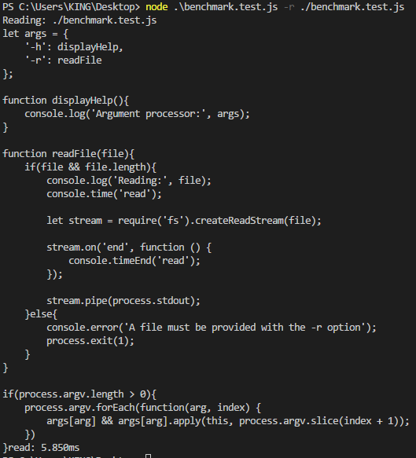

Node 技巧笔记1 - Node 环境，全局变量
Node 最主要的特性是它的标准类库，模块系统和 NPM，其中最强大的是标准类库，主要由二进制类库以及核心模块两部分组成，二进制类库包括 libuv，它为网络以及文件系统提供了快速的事件循环以及非阻塞的 I/O。
EventEmitter 是大多数Node核心模块的基础，stream，网络，文件系统全都继承自它。比如可以基于 EventEmitter 自定义的基于事件的 API，例如开发一个 paypal 付款处理模块，让其基于事件，这样 Payment 对象的实例可以触发像 paid 和 refund 这样的事件，可以将这个模块从业务逻辑中分离解耦，在其他项目中重用。
通过 stream 简单使用入门
stream 是高可扩展 I/O 的基础，其能被用来在不可预测的输入下创建数据，如网络连接。通过 stream 可以将多个 streams 连接起来，一个 stream 对象从网络读取数据，然后把读取到的数据输送给另外一个 stream 中加工处理…
以一个简单的例子, 创建一个用于计数的可写流：
countstream.js1
2
3
4
5
6
7
8
9
10
11
12
13
14
15
16
17
18
19
20
21
22
23
24
25
26let Writable = require('stream').Writable;
let util = require('util');
module.exports = CountStream;
util.inherits(CountStream, Writable); // 继承可写流
function CountStream(txt, opt){
Writable.call(this, opt);
this.count = 0;
this.matcher = new RegExp(txt, 'ig'); // 创建一个全局且忽略大小写的正则表达式
}
CountStream.prototype._write = function (chunk, encoding, cb) {
let matches = chunk.toString().match(this.matcher); // 将输入流转化为字符串并进行匹配
if(matches){
this.count += matches.length;
}
cb();
}
CountStream.prototype.end = function () {
this.emit('total', this.count); // 输入流结束时，触发total事件
}
使用CountStream类:
index.js1
2
3
4
5
6
7
8
9
10
11let CountStream = require('./countstream');
let countStream = new CountStream('js'); // 假设传入的匹配文本为js
let http = require('http');
http.get('xmoyking.github.io', function(res){ // 下载页面
res.pipe(countStream); // 将网站数据以管道方式把数据传给countStream用于文本计数
});
countStream.on('total', function(count){
console.log('Total matches:', count);
});
编写测试, 利用 node 自带的 assert 模块，无需依赖第三方的测试，进行简单测试：
test.js1
2
3
4
5
6
7
8
9
10
11
12
13
14
15
16
17
18let assert = require('assert');
let CountStream = require('./countStream');
let countStream = new CountStream('example');
let fs = require('fs');
let passed = 0;
countStream.on('total', function (count) { // 当流结束时，触发total事件
assert.equal(count, 1); // 断言预计数量
passed++;
});
// 创建一个可独流并通过管道将当前文件传给CountStream
fs.createReadStream(__filename).pipe(countStream);
process.on('exit', function () {
console.log('Assertion passed:', passed); // 展示断言数量
});
全局对象能被用在所有的模块中，无论是网络应用、网站、还是命令行脚本。学习 Node 的全局对象和方法能帮助我们更好的理解 Node、与操作系统的关系、与其他JS运行环境的区别，如浏览器。
其中一个重要的全局对象是 process，它可以用来于操作系统通信。 UNIX 的标准输入输出流，可以通过 Node 的 streaming 接口从 process 对象获取。又比如 Buffer 类，它为 JS 操作二进制数据提供了支持，现在的很多 Node 应用都依赖与 Buffer 类。
一些全局对象在每一个模块中都是独立的实体，如 module 对象在所有的 Node 程序中都存在，但每个 module 对象仅仅存在于它当前的模块中，因为 Node 程序可由多个模块组成，所以 module 彼此间的作用域是不互通的。
模块
技巧1 安装和加载模块
在 Node 中，通过 npm 可以查找、安装和管理包，包可由一个或多个模块组成，每个模块可以有自己的依赖。
通过 npm install 模块名 安装，一般是安装在 ./node_modules目录下。全局安装则安装到全局目录下（注：此处的全局安装其实指的是能在命令行全局的直接输入执行命令），在 UNIX 系统中通常是 /usr/local/lib/node_modules 目录，Windows下则与 node.exe 文件同目录。
若考虑到于其他人协作，并共同开发，则将模块作为依赖添加到项目中的 package.json 文件比较好，严格管理项目依赖可以在将来模块更新维护时较轻松。
通过 require('模块名') 来加载模块，通常 require 返回一个对象或方法，具体取决于模块的导出设置。
判断 Node 具体加载了那个模块，可以通过 require.resolve(id), 其将返回文件的绝对路径。
一旦模块被加载了，则其会被缓存，即，多次记载同一个模块将返回同一个对象。
技巧2 创建和管理模块
对象、方法、以及变量都可以从一个模块通过 exports 导出，当一个模块只有一个类时，那么应该使用 module.export 导出，因为在使用时，let MyClass = require('myclass'); 比 let MyClass = require('myclass').MyClass; 更清晰:1
2
3
4
5
6
7
8
9
10
11function MyClass(){}
MyClass.prototype = {
method(){
return 'hello';
}
}
let myClass = new MyClass();
module.exports = myClass;
对外导出多个对象、方法和值时，则使用 exports：1
2
3
4
5
6
7exports.method = function(){
return 'hello';
}
exports.method2 = funcion(){
return 'world';
}
技巧3 加载一组相关模块
Node 可以将目录作为模块，将相关模块按逻辑组合起来的方法：
- 通过在文件夹下创建一个 index.js 的文件来加载各个模块，并将它们一起导出
- 在文件夹下创建一个 package.json 文件
通常一个模块是逻辑自包含的，当将其分隔为多个文件防止单文件臃肿并解耦也非常有必要，大多数 npm 上的模块都将一个大模块拆分为多个文件, 使用 index.js 的方法加载一组模块：
比如 group/index.js1
2
3
4module.exports = {
one: require('./one');
two: require('./two');
}
使用：1
2
3let group = require('./group');
group.one();
group.two();
若采用 package.json 的方式，则需要该 package.json 文件中有一个 main 属性指向一个 JS 文件，而这个 JS 文件其实就类似上面的 index.js 文件，好处就是可以指定其他名字的 JS 文件作为入口而不是必须要 index.js。
技巧4 使用路径
Node 提供了类库来找到当前路径、目录或模块的路径，通过 __dirname 或 __filename 来找到文件的位置。1
2
3// 输出当前脚本的绝对路径
console.log('__dirname', __dirname);
console.log('__filename', __filename);
大多数时候都通过拼接字符串的方法来组合路径和变量，兼容 Windows 和 UNIX，在 Windows 下会将斜杠转换为标准格式。1
2
3
4let view = __dirname + '/views/view.html';
// 也可以使用 path 模块的 path.join 方法:
path.join(__dirname, 'views', 'view.html');
标准 I/O 以及 console 对象
技巧5 标准 I/O 流的读写
通过 process.stdout 和 process.stdin 来读写 I/O 流。其中，process.stdout 对象是一个可写的 stream。
示例：如何从命令行接收文字，处理并输出
process.test.js1
2
3
4
5
6
7
8// 通过 | 管道符号，将输出直接转到 node 输入中
// 在命令行运行： cat file.txt | node process.js
process.stdin.resume(); // 通知 stream 准备开始读取数据
process.stdin.setEncoding('utf8'); // 设置编码格式
process.stdin.on('data', function(txt){
process.stdout.write(txt.toUpperCase()); // 转换为大写并输出
});
技巧6 打印日志消息
使用 console 对象提供的方法将消息按类型记录起来，如 log、info、error、warn。
log 和 error 的区别是输出流的不同，log 写入的流是 process.stdout，error 方法将写入的流是 process.stderr。可在终端或 shell 脚本中将 Node 程序的错误消息重定向。
通过 2> errorfile.log 错误的消息将会被重定向到 errorfile.log 文件，其他消息则会被打印到正常终端。1
node process.test.js 2> errorfile.log
其中，在 UNIX 系统上，2句柄代表错误流，1代表标准输出流，0代表输入流。
通过 console.trace 方法可以在当前执行点产生堆栈日志，包括执行异步回调的代码的行号。
技巧7 基准测试
Node 可以不依赖其他工具的情况下完成基准测试，通过 console.time() 和 console.timeEnd()。
调用 console.time('label') 以毫秒记录当前的时间，并在后来调用 console.timeEnd('label') 显示从前一个 label 点开始的持续的时间，整个持续时间会自动以毫秒和 label 标签打印在一起。
示例：接收一个命令行参数，通过基准测试来看读取文件有多快
benchmark.test.js1
2
3
4
5
6
7
8
9
10
11
12
13
14
15
16
17
18
19
20
21
22
23
24
25
26
27
28
29
30
31
32
33
34// 定义一个简单的对象，表示可用的参数
let args = {
'-h': displayHelp,
'-r': readFile
};
function displayHelp(){
console.log('Argument processor:', args);
}
function readFile(file){
if(file && file.length){
console.log('Reading:', file);
console.time('read');
let stream = require('fs').createReadStream(file);
stream.on('end', function () {
console.timeEnd('read');
});
stream.pipe(process.stdout);
}else{
console.error('A file must be provided with the -r option');
process.exit(1);
}
}
if(process.argv.length > 0){
process.argv.forEach(function(arg, index) {
// 调用从参数模型中匹配到的方法，并将参数列表中的选项内容取出
args[arg] && args[arg].apply(this, process.argv.slice(index + 1));
})
}
上述示例运行结果如下：

通过多次交叉调用 conosle.time 与不同的标签，可以产生多次基准测试，这对探究复杂、多层嵌套的异步函数的性能是非常有用的。
这些方法基于 Date.now() 计算函数的执行时间，精确到毫秒，若要更加精确，则需要结合 benchamar 和 microtime 使用。
操作系统与命令行
process 对象能被用来获取操作系统的信息，并且通过退出码（exit code）、信号量（signal）与其他进程进行通信。
技巧8 获取平台信息
有的时候需要基于操作系统或处理器架构运行基于特定平台的代码、通过 process.arch 与 process.platform 属性即可。
示例：基于系统架构的分支
arch.test.js1
2
3
4
5
6
7
8
9
10switch(process.arch){
case 'x64':
require('./基于.x64.模块名');
break;
case 'ia32':
require('./基于.Win32.模块名');
break;
default:
throw new Error('Unsupported arch:', process.arch);
}
另外，通过 process.memoryUsage() 可以获取当前进程的内存使用情况，其属性如下：
- rss 常驻内存大小，是指在 RAM 中维持进程的部分
- heapTotal 动态分配的可用内存
- heapUsed 已经使用的堆大小
技巧9 传递命令行参数
Node 提供了一个简单的 API 来处理命令行参数，使用 process.argv 即可。
process.argv 是一个数组，可以用来查看有多少参数传入，其中头两个是 node 以及当前运行脚本的文件名，具体参考 benchmark.test.js 的内容。
对于有复杂参数的程序，可以使用参数解析模块，如 optimist 、commander
- optimist 将参数转换为一个对象，同时支持默认值、自动生成用例、以及简单的验证等功能
- commander 可以使用链式 API
技巧10 退出程序
Node 在需要退出时指定退出码，因为其他程序会通过检查退出码来确定一个程序是否启动成功，当程序是一个大系统中的某部分时，对维护和调试非常有用了，通过 process.exit() 指定退出码。
在 Node 中，默认退出的返回退出码为0，即正常终止，任何非0状态认为是出错，在 UNIX 中这个退出码可以通过 $? 在 shell 中获取，在 Windows 中可以通过 %errorlevel% 获取。
技巧11 响应信号量
Node 中，通过 process 对象的信号事件，可以响应其他进程发出的信号。
process 对象是一个 EventEmitter 对象，即可以对其添加监听器，在 UNIX 中对一个 POSIX 信号添加一个监听器就可以。
示例：对 POSIX 信号添加监听器
signal.test.js1
2
3
4
5
6process.stdin.resume(); // 从标准输入流中读取，其会一直执行，直到进程被杀死
process.on('SIGNAL', function(){ // 对 SIGNAL 信号绑定监听器
console.log('Reloading config');
});
console.log('PID:', process.pid); // 显示PID
在对标准输入进行任何操作前，都应该调用 resume 来防止 Node 直接退出。
使用 timer 延迟执行
Node 实现了 JS 的计时器功能：setTimeout、setInterval、clearTimeout等
技巧12 setTimeout 延迟执行
示例：将 setTimeout 与 bind 配合, 延迟执行1
2
3
4
5
6
7
8
9
10
11function Bomb(){
this.message = 'Bomb';
}
Bomb.prototype.explode = function(){
console.log(this.message);
}
let bomb = new Bomb();
// 通过 bind 将方法绑定到正确的对象上
setTimeout(bomb.explode.bind(bomb), 1000);
技巧13 通过定时器定时调用回调函数
对 setInterval，除了调用 clearInterval 终止，Node 0.10 版本还提供了 timerRef.unref() 方法，即，你可以在一些操作的同时使用 setTimeout 和 setInterval，而不用在操作执行后通知 timer。
在没有合适的调用 clearInterval 的时候，unref 就会很有用了。
示例：让计时器持续运行知道程序退出1
2
3
4
5
6
7
8
9
10function monitor(){
console.log(process.memoryUsage());
}
let id = setInterval(monitor, 100);
id.unref(); // 在程序完成长时间的操作后，告知 Node 停止计时器
setTimeout(function(){
console.log('Done!');
}, 4000);
技巧14 安全的操作异步接口
有时候需要在一个尽可能短的延迟后执行一个回调，使用 setTimeout 为0的延迟不是最佳解决方案，Node 提供的 process.nextTick 更好用。
process.nextTick 方法允许你把一个回调放在下一次事件轮询队列的头上（注：不是队尾！），即它可以延迟执行，但它比 setTimeout 优先级更高。
也可以通过 nextTick 将一个同步方法包装为异步方法。
示例：返回一个 EventEmitter 实例的方法，这个方法提供一个基于事件的接口，允许调用者订阅这个事件。1
2
3
4
5
6
7
8
9
10
11
12
13let EventEmitter = require('events').EventEmitter;
function complexOperations(){
let events = new EvenEmitter();
events.emit('success');
return events;
}
complexOperations().on('success', function(){
console.log('success!');
});
上例在运行后并不会在最后触发 success 事件，因为这个事件在监听器订阅之前就已经触发了，通常，一个事件会在一个异步操作中触发，但有时候也会提前触发。
使用 nextTick 改进如下：1
2
3
4
5
6
7
8
9function complexOperations(){
let events = new EvenEmitter();
process.nextTick(function(){ // success 事件将在监听器准备好后才触发
events.emit('success');
});
return events;
}
Node 文档中建议，接口要么是同步，要么是异步，表示如果一个方法接受一个回调，且很可能是异步调用，那么你应该在同步的情况下通过 nextTick 来执行它，这样能确保执行顺序。
示例：异步读取文件，并缓存，之后的调用将直接返回缓存内容。当返回缓存时，通过调用 nextTick 来使接口异步执行。
alwayAsyncRead.js1
2
3
4
5
6
7
8
9
10
11
12
13
14
15
16
17
18
19
20
21
22
23
24
25
26
27
28
29
30
31
32
33let EventEmitter = require('events').EventEmitter;
let fs = require('fs');
let content;
function readFileIfRequired(cb){
if(!content){
// 若内容没准备好，则异步读取
fs.readFile(__filename, 'utf8', function(err, data) {
content = data;
console.log('ReadFile: first');
cb(err, content);
});
}else{
// 直接返回缓存的内容，但第一次调用使用 process.nextTick
process.nextTick(function(){
console.log('ReadFile: cached');
cb(null, content);
});
}
}
readFileIfRequired(function(err, data){
console.log('1. length:', data.length);
readFileIfRequired(function(err, data2){
console.log('2. length:', data2.length);
})
console.log('reading file again.');
});
console.log('reading file.');
setImmediate 和 process.maxTickDepth：
setImmediate 以及 clearImmediate 全局方法接受一个回调和可选参数，它会在下一次 I/O 事件后并在 setTimeout 和 setInterval 之前运行。
传入 process.nextTick 的回调通常在当前事件轮询结束后才执行，可以被安全的执行回调数量由 maxTickDepth 指定，默认1000。